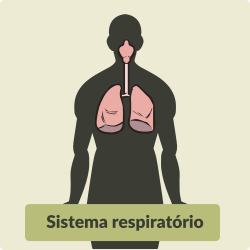
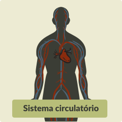

Como salientado anteriormente, a inflamação é uma das reações mais primordiais do organismo humano e está presente em quase todas as doenças, em menor ou maior grau de intensidade. Entretanto, existem aquelas em que o componente inflamatório representa um dos fatores críticos ou é o principal elemento de perpetuação da doença e/ou de lesão tecidual e comprometimento da saúde dos pacientes. Nesses casos, combinar, na terapêutica, medicamentos que controlem o processo inflamatório é medida fundamental para o sucesso do tratamento.
Clique em cada um dos títulos.

